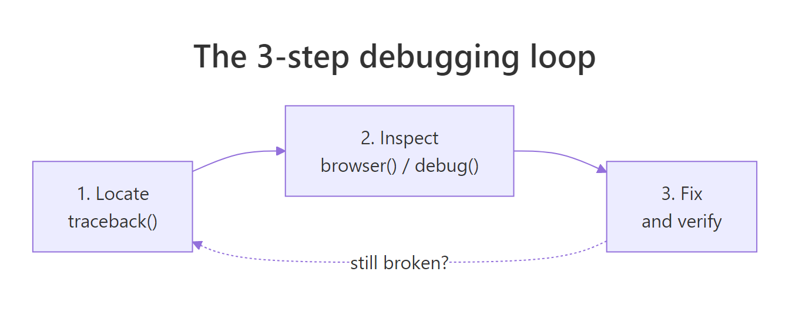
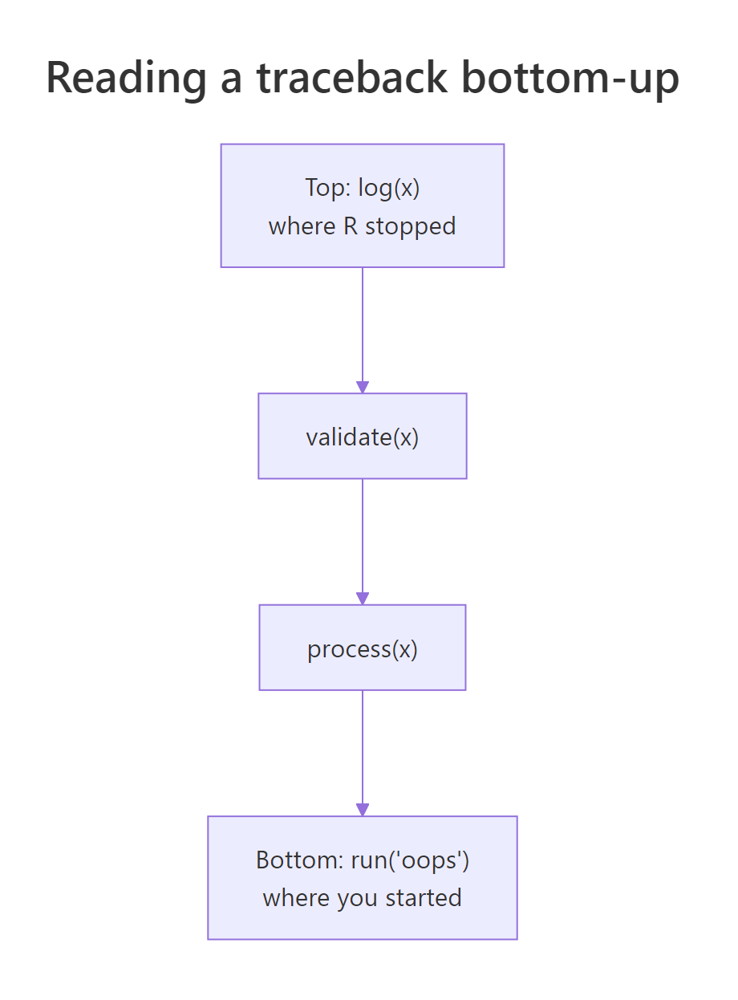
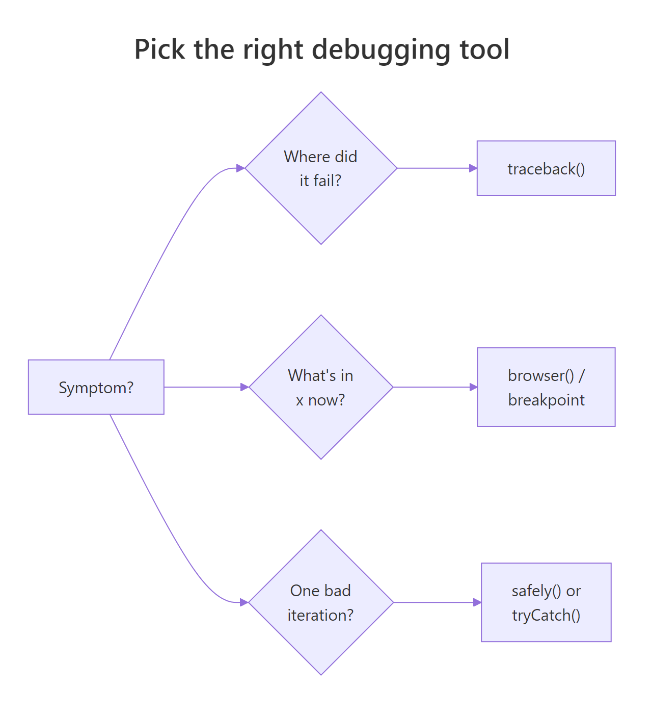

Debugging R: The Complete Toolkit — From traceback() to RStudio Breakpoints
Debugging R is the process of locating, inspecting, and fixing code that produces errors or wrong results. R gives you four core tools — traceback() to find where a failure happened, browser() to pause and inspect state, debug() to step through a function line by line, and RStudio's visual debugger for a point-and-click workflow — and this article teaches you when to reach for each.
What's the 3-step debugging workflow in R?
Every debugging session answers three questions in order: where did the code fail, what was the state at that moment, and why was that state wrong? The R toolkit — traceback(), browser(), debug(), RStudio breakpoints — exists to answer them systematically. Below is a toy weighted-mean function that silently returns NA. Watch the three steps collapse into one block: observe the bad output, diagnose in one line, ship the fix.
The broken function silently returns NA — no warning, no error, nothing alerts you that something went wrong. Diagnosis takes one sentence: sum() propagates NA. The fix is a three-line guard that keeps only the complete pairs before computing the ratio. The corrected result, 23.33333, is the mean of 10, 20, and 40 weighted equally — exactly what we wanted.
That is the whole loop in miniature: locate the symptom, inspect the cause, ship the fix. For real bugs the "locate" step is the hard part — the error may be buried ten function calls deep — and that is where traceback(), browser(), and the rest of the toolkit earn their keep.
Try it: Write ex_is_adult(age) that returns TRUE when age >= 18. The buggy version accepts string input like "17" and silently returns FALSE because R compares strings character-by-character. Find the bug and fix it.
Click to reveal solution
Explanation: The silent bug is that "9" >= "18" compares lexicographically ("9" > "1"), returning TRUE. Coercing to numeric up front forces you to think about the input contract and fail loudly on garbage.

Figure 1: The 3-step debugging loop — locate the failure, inspect the state, fix and verify. Repeat if the fix exposes a deeper bug.
How does traceback() show where an error happened?
When an error happens inside a deep function call, R prints the error message but not the call chain that led there. You are left staring at an error like Error in FUN(left, right): non-numeric argument to binary operator with no idea which of your functions called FUN. traceback() fixes that — it prints the call stack at the moment of the error, reading bottom-up: the bottom is where you started, the top is where R stopped.
Let's build a three-function chain, trigger an error, and read the stack. We capture the stack with sys.calls() inside a tryCatch() handler so the example runs in any R context — in an interactive session you would just type traceback() after the error instead.
In an interactive R session, you'd simply type traceback() right after the error and see exactly the same chain — validate(x) at the top (where R stopped), run("oops") near the bottom (where you started). Read from the top down to find the innermost failing call; read from the bottom up to retrace your own control flow. Either direction works — what matters is knowing which way you are reading.
traceback() only works if you catch the error yourself. Wrap suspect sections in tryCatch(..., error = function(e) sys.calls()) and the same information lands in a variable you can log or print.Here is a subtler example — the bug is a bad list index, not a type error. The traceback still points at the exact failing frame:
The error message alone (subscript out of bounds) tells you what went wrong but not where. traceback() points at inner_validate(), and from there you know exactly which line to probe.

Figure 2: traceback() reads the call stack bottom-up. The bottom is where your code started; the top is where R stopped. Every frame in between is a function that was called but has not yet returned.
Try it: You are shown the traceback below. Which user function should you inspect first?
Click to reveal solution
Explanation: stop() is base R — not yours to fix. lapply() is base R too. main() and load_batch() are yours but they just delegated the work. The innermost user function in the stack is clean_row() — that is where the bad data meets your code, so probe there first.
How does browser() let you pause and inspect?
traceback() tells you where a failure happened; browser() lets you examine what the state was at that point. Drop browser() anywhere in your code and when R reaches it the prompt changes to Browse[1]> — from there you can type any R expression in the local environment, ls() to see what variables exist, n to run the next line, or c to continue.
Here are the five single-letter commands you'll use 99% of the time, plus where and ls():
| Command | What it does |
|---|---|
n |
Next — execute the current line and stop on the next |
s |
Step into — step into the function call on the current line |
f |
Finish — run the rest of the current loop/function, then pause |
c |
Continue — resume execution until the next browser() or end |
Q |
Quit — abort the function and return to the top-level prompt |
where |
Print the call stack from here upward |
ls() |
List all local variables in the current frame |
Let's use it on a budget function that silently returns the wrong total. In a real session you would uncomment the browser() call; the block below runs the function straight through so you can see the output, with a simulated Browse[1]> transcript in the comments showing what an interactive session would look like.
The NA in budget$outflow propagates through sum(), poisoning expenses and net. In the browser you spot it instantly with ls() + a quick sum(budget$outflow). Without the browser you might stare at the function body and miss the missing value entirely — the bug is in the data, not the logic. That is why browser() is so powerful: it lets you examine reality, not your expectation of reality.
Rscript run, so your CI passes, but they freeze an interactive RStudio session for anyone who sources the file. Use RStudio breakpoints (Shift+F9) instead — they live outside the source and can't be committed.Conditional browser() to stop only on the interesting case
When a bug shows up on row 7 423 of 10 000, you cannot afford to press n seven thousand times. A conditional browser() pauses only when a predicate fires:
With the conditional guard you get an interactive pause exactly when the state is interesting and the loop runs at full speed otherwise. That pattern alone — "break on predicate" — earns back its learning cost on the first large dataset you debug.
browser() has no terminal to talk to so it silently does nothing. Use the tryCatch(..., error = function(e) sys.frames()) pattern to capture the environments, or log key values with cat()/message().Try it: The buggy ex_compute_bmi(weight_kg, height_cm) below uses centimetres when it should use metres. Insert a single conditional browser() call that only fires if the computed BMI is less than 1 (an impossibly low value that flags the unit mistake). You only need to write the line — you don't have to run it.
Click to reveal solution
Explanation: The conditional if (bmi < 1) browser() triggers only when the value is obviously wrong. In an interactive session you'd land in the browser, type height_cm and see 175, then realise the formula needs height_cm / 100. The fix is one line, and the guard can stay in the code as a self-test.
How do debug() and debugonce() step through a function?
browser() requires you to edit the function and add a line. debug() does the same thing from outside: debug(fn) marks fn so every subsequent call pauses at its first line, as if a browser() sat at the top. debugonce(fn) does the same but exactly once — after one call, the mark clears. For 95% of your debugging, reach for debugonce() — it is self-cleaning, so you cannot forget to turn it off.
You spot the bug in two steps: step into the function, inspect discount, realise pct is being treated as a fraction when it was passed as a whole-number percent. One-line fix: discount <- price * pct / 100. The real payoff of debugonce() is that you did not have to edit discount_price — you marked it externally, ran it once, and the mark vanished.
debug(fn) sets a persistent mark — every future call pauses until you remember to undebug(fn). debugonce(fn) clears itself after one call. Over the course of a long session, the self-cleaning version saves you from the "why is my function pausing again?" surprise.isdebugged(fn) is how you check a mark without triggering it, and undebug(fn) is the escape hatch when you forgot which functions you marked earlier in the session.
Try it: You run debugonce(score_round) and then make three calls. Which call (first, second, or third) pauses inside the debugger?
Click to reveal solution
Explanation: debugonce() pauses on the very next call (A), then the mark clears automatically. Calls B and C run without pausing. That is why it's called "once" and why it's safer than debug() for quick investigations.
How does options(error = recover) catch errors automatically?
traceback(), browser(), and debug() are reactive — you invoke them after or around a specific call. options(error = recover) is proactive: it installs a global error handler so that any time any error occurs, R drops you into a frame-picker prompt listing every live call on the stack. You type a number to step into that frame and poke around post-mortem.
The win is that you did not know which call would fail or where to put a browser() — you just turned the handler on and waited. When an unexpected error lands, you are already inside the debugger.
For batch scripts that run unattended, there is a runnable variant: dump.frames() saves the call-stack environments to disk so you can load them later in an interactive session with debugger().
dump.frames() is how you debug a crash that happened at 3am on a server. The batch script saves its stack to a file, you log in the next morning, load the dump, call debugger(), and you are inside the exact environments that existed at the moment of failure — variables and all.
Try it: Write the single line of R that sets up R to automatically dump every error's frames to disk so you can inspect them later with debugger(). (Hint: the value you assign to the error option can be an expression — and the batch-friendly one is quote(dump.frames("last.dump", TRUE)).)
Click to reveal solution
Explanation: quote() wraps the call unevaluated so the option stores the expression; R then runs it every time an error occurs. The second TRUE tells dump.frames() to write the dump straight to disk (last.dump.rda) instead of leaving it in memory — perfect for unattended scripts.
How do you use RStudio's visual debugger and breakpoints?
RStudio wraps every primitive above in a point-and-click workflow. Click in the left margin of the editor next to a line number (or put your cursor on the line and press Shift+F9) and a red dot appears — that's a breakpoint. It behaves exactly like browser() at that line, with one critical difference: it lives in RStudio's project metadata, not your source file, so you cannot accidentally commit it.
When execution pauses at a breakpoint, four RStudio panes come alive:
| Pane | What it shows | Equivalent in console |
|---|---|---|
| Environment | Every local variable in the current frame | ls() + print each name |
| Traceback | The call stack from your entry point to here | traceback() / where |
| Source | The current line highlighted in yellow | n prompt in browser |
| Console | Browse[1]> prompt for arbitrary R expressions |
identical |
The debugger toolbar (above the console when paused) offers five buttons mapped to the browser commands you already know:
| Button | Shortcut | browser() equivalent |
Action |
|---|---|---|---|
| Next | F10 | n |
Run the current line, stop on the next |
| Step Into | Shift+F4 | s |
Step into the function call on this line |
| Finish Function | Shift+F6 | f |
Run to the end of the current function |
| Continue | Shift+F5 | c |
Resume until the next breakpoint |
| Stop | Shift+F8 | Q |
Abort debugging and return to the top |
One more RStudio win: after a function errors at the top level, the console shows a "Rerun with Debug" button. Click it and RStudio re-runs the exact failing call with debug() auto-enabled on the function that threw — no keyboard dance required.
browser() calls in source code do not survive git checkout — or rather, if they do, that is a bug in your workflow.Try it: You hit a breakpoint inside deduct_tax(1000, 0.20) at the net <- gross - tax_due line and want to check the value of tax_due before running that line. Which RStudio button — Next (F10), Step Into (Shift+F4), Finish (Shift+F6), Continue (Shift+F5), or Stop (Shift+F8) — should you press first?
Click to reveal solution
Explanation: You don't need to press anything to inspect — the Environment pane already shows every local variable including tax_due, and you can type any expression in the console. Once you've inspected, Next (F10) runs the current line and stops on the next one. Step Into would only help if the current line were a function call. Finish would skip the rest of the function, losing your pause.
How do you debug inside lapply(), purrr::map(), and loops?
The painful case: you run lapply(rows, parse) over 10 000 rows and one of them throws. You lose every result computed so far, and traceback() just points at FUN(X[[i]]) — it does not tell you which i. Two patterns save you: wrap each call in tryCatch() to turn errors into tagged results, or use purrr::safely() for the idiomatic version.
Every row gets processed, the loop never dies, and you end up with a clean split between the rows that worked and the rows that did not — with the exact index and error message for each failure. That is debuggable output.
The purrr version is the same pattern without the hand-rolled bookkeeping. safely() takes a function and returns a new function that always returns list(result, error) — one is always NULL, the other always populated.
Two lines (safe_risky <- safely(risky), map(xs, safe_risky)) replace the hand-rolled tryCatch from the previous block. transpose() flips the "list of results" into "results list + errors list" so you can index into either by position.
browser() into a mapper, lapply() will open the interactive prompt for every single element — you'll give up and Ctrl+C out within 10 rows. Either make it conditional (if (suspicious) browser()) or use safely() to collect errors without pausing.In an interactive session, that browser() would pause on row B and only row B — you inspect the bad row in isolation without wading through the good ones.
Try it: The ex_parser(lines) below parses each line of input as a number. It currently crashes on the first malformed line. Wrap the parser with purrr::safely() so the batch keeps running and collects errors. Return a list with results and errors components.
Click to reveal solution
Explanation: safely(ex_parse_line) turns the risky parser into one that cannot throw. map() runs it over every line, transpose() flips the list, and two map_lgl calls separate successes from errors. The batch always finishes.
Practice Exercises
Exercise 1: Locate and fix from a captured stack
The merge_reports() function below fails when you try to merge two data frames. Use the tryCatch(..., error = function(e) sys.calls()) pattern to capture the call stack, identify the failing frame, and ship a corrected version. Save the merged result to my_merged.
Click to reveal solution
Explanation: new[["field"]] pulls the whole column regardless of i. The tryCatch() stack capture points you at merge_reports as the failing frame, and one minute of reading confirms the off-by-everything loop. Row-at-a-time indexing fixes it.
Exercise 2: Find the first bad row with a conditional pause
Write find_bad_row(df, predicate) that scans the rows of df and returns the row index of the first row where predicate(row) is TRUE. Use a conditional-pause pattern — simulated here with an immediate return() instead of a browser() call so it runs in WebR — so your function stops at the first match instead of scanning every row. Test it on mtcars by finding the first car with mpg < 15.
Click to reveal solution
Explanation: The loop short-circuits on the first match. Swap the return(i) for browser() in a real RStudio session and you land in the debugger with i, row_i, and df all in scope — ready to inspect why the predicate fired. That conversion between "return on match" and "pause on match" is the whole conditional-browser() pattern in three lines.
Exercise 3: Build a resilient mapper
Write robust_apply(xs, fn) that calls fn on every element of xs and returns a list with two components: results (a list of successes tagged by index) and errors (a list of failures tagged by index and error message). It must work when 90% of elements fail. Use purrr::safely(). Test it on a function that only succeeds for even numbers.
Click to reveal solution
Explanation: safely(fn) turns each call into a guaranteed-success wrapper returning list(result, error). Tagging each output with its original index is what lets you correlate failures back to input positions — without indices, a resilient map still leaves you guessing which element broke.
Complete Example
Let's walk a silent bug through a whole pipeline from symptom to ship-ready fix, using the three tools you'd actually reach for: tryCatch + sys.calls to locate, a conditional pause pattern to inspect, and a strict input guard to fix. The pipeline grades students pass/fail; the symptom is that everyone is failing.
The fix isn't in the comparison — it's at the input boundary. validate_score_strict() refuses non-numeric input loudly, and the wrapper catches that refusal so one bad record does not corrupt the others. Alice, Bob, and Dave now pass; Carol's row is flagged with a specific, actionable error message. Every step of the debugging journey — locate, inspect, fix — was one of the tools in this article.
Summary
Pick the tool that matches your current question. The decision usually comes down to one of seven symptoms:
| Symptom | Reach for | Works in WebR? |
|---|---|---|
| "Where did it blow up?" | traceback() / sys.calls() |
Yes, via tryCatch |
"What's in x right now?" |
browser() / RStudio breakpoint |
No, interactive only |
| "Step through this one function" | debugonce(fn) |
No |
| "I want the state on any error" | options(error = recover) |
No |
| "Save the crash for later" | dump.frames() + debugger() |
Yes |
"One element in lapply() blows up" |
tryCatch() per element or purrr::safely() |
Yes |
| "Visual, click-driven workflow" | RStudio breakpoints + Environment pane | n/a |

Figure 3: Pick the right debugging tool based on the symptom. Most sessions start with traceback(), escalate to browser() / breakpoints, and finish with a strict input guard.
Key takeaways:
- Locate first, then inspect, then fix. Guessing before you've located the failure is the single biggest time sink in debugging.
- Prefer
debugonce()overdebug(). The self-cleaning variant is safer and you never have to rememberundebug(). - Use
tryCatch()orpurrr::safely()for loops. Plainbrowser()insidelapply()pauses on every element; neither version lets you finish the batch and see which element failed. - Set
options(error = recover)before risky runs. It's free insurance — nothing happens unless an error fires, and when one does you're already in the debugger. - Use RStudio breakpoints for anything that survives past one session. They live outside your source, so they cannot be committed by accident.
References
- Wickham, H. — Advanced R, 2nd Edition. Chapter 22: Debugging. Link
- Posit / RStudio — Debugging with the RStudio IDE. Link
- Posit — RStudio User Guide: Debugging. Link
- Grolemund, G. — Hands-On Programming with R, Appendix E: Debugging R Code. Link
- Bryan, J. & Hester, J. — What They Forgot to Teach You About R, Ch 12: Debugging R code. Link
- R base documentation —
browser,debug,traceback,recover. Link purrr::safely()reference. Link
Continue Learning
- R's Condition System — signal and handle errors cleanly with
stop(),warning(),tryCatch(), andwithCallingHandlers()before they become bugs you have to debug. - 50 Common R Errors — the catalogue of R error messages you'll see in
traceback()output, with a short fix for each. - R Execution Stack — a deeper dive into
sys.call(),parent.frame(), and how the call stack youtraceback()through is actually built.